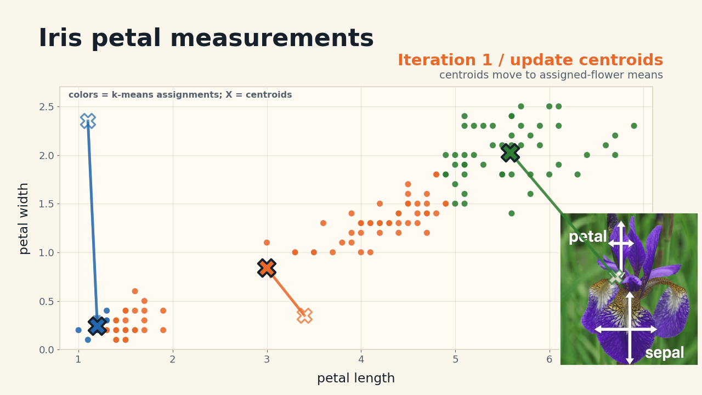
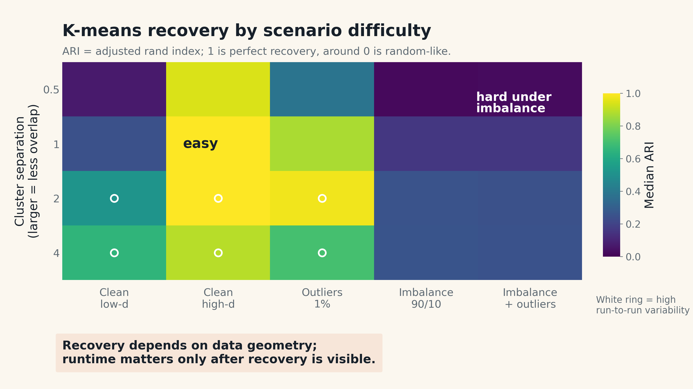
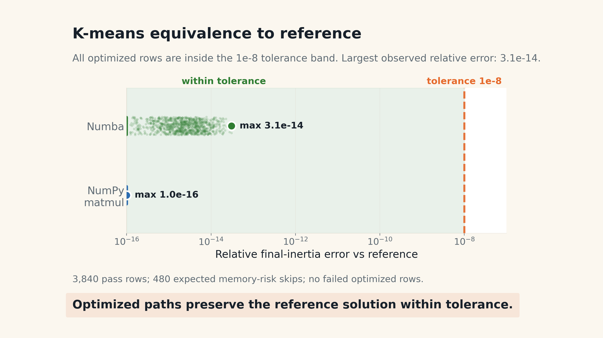
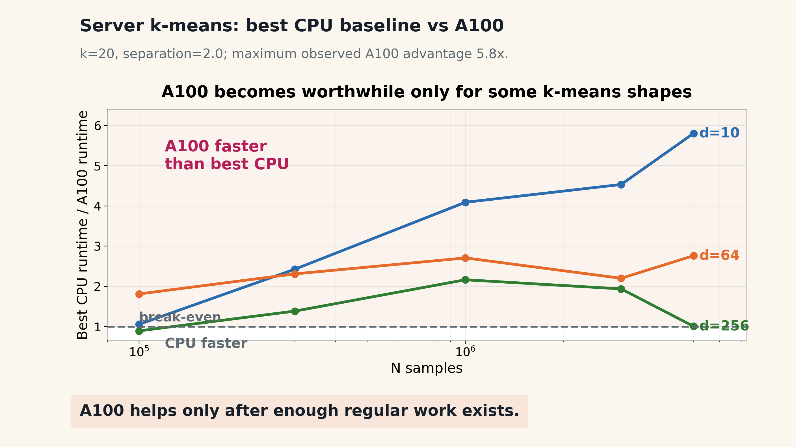
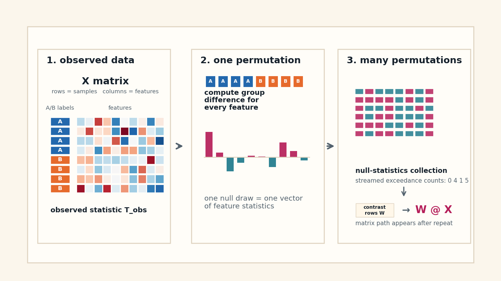
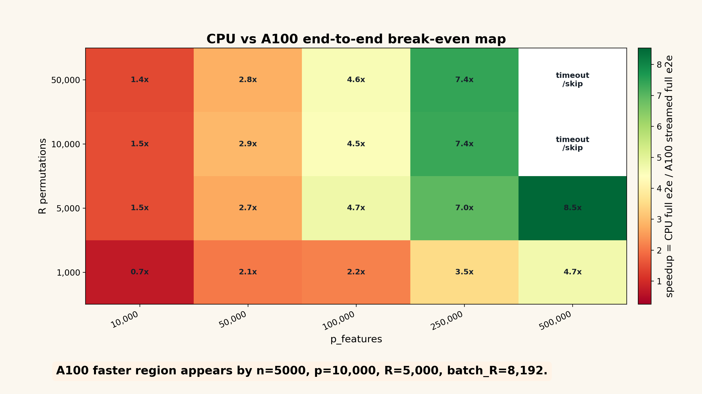
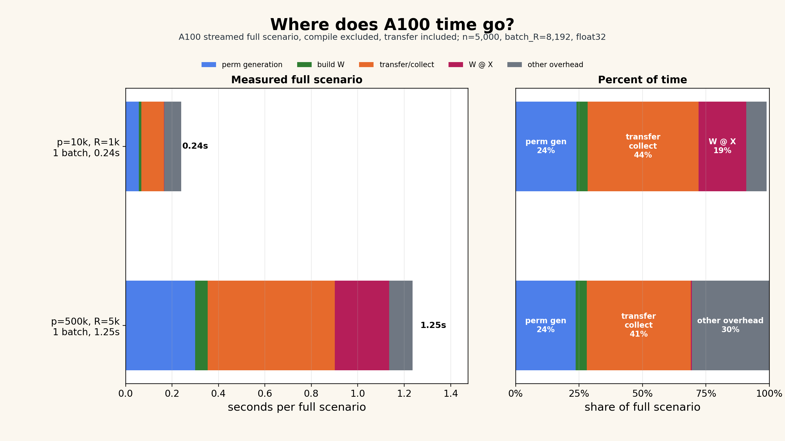
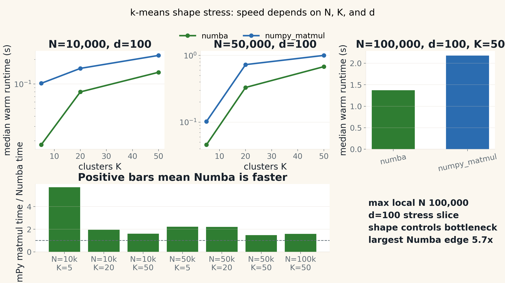
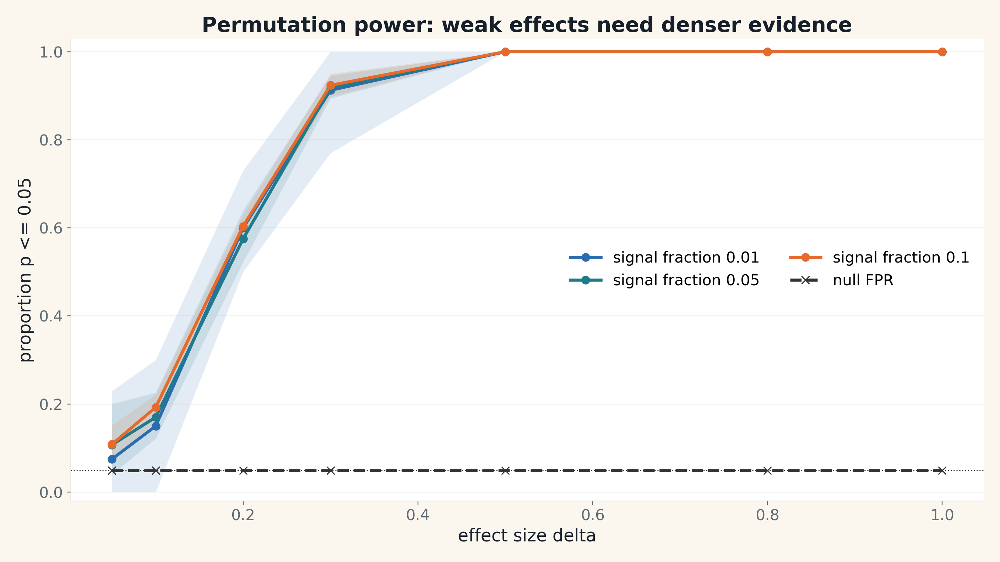
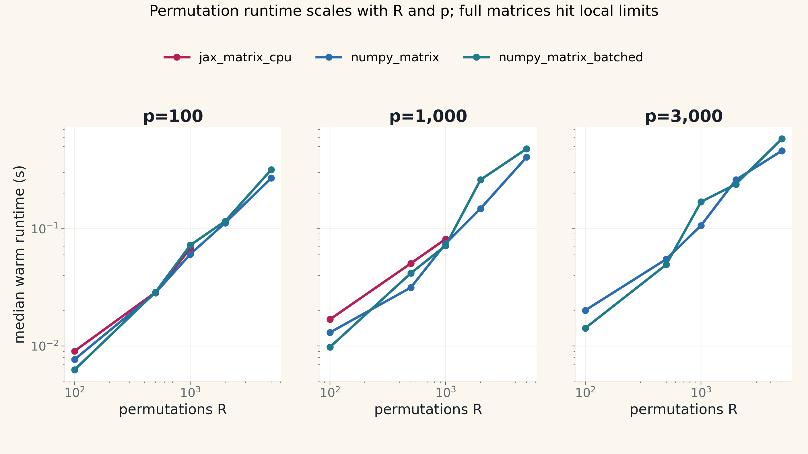

Fast statistical models with Python 3.14, Numba, and JAX - told from the workflow of a statistician.
Wenxin Jiang and Jian Yin - Department of Biostatistics, City University of Hong Kong
We use Python to move through the whole scientific loop: write the model, test the behavior, find hard cases, then accelerate the expensive pattern.
In practice, the exact statistical specification often becomes clearer through simulation: which assumptions matter, which cases fail, which outputs should be stable.
Readable Python or NumPy code is not throwaway. It is the executable definition that optimized kernels must match.
Numba, JAX, threads, and GPUs are useful only when they compute the same statistic on the same controlled scenarios.
Rule for the talk: a faster implementation that changes the statistic is not an optimization. It is a different method.
True clusters, null behavior, effect size, invariants, expected calibration, or exact reference output.
Low separation, imbalance, outliers, high dimension, bad seeds, memory pressure, and worker overhead.
Only variants that pass the statistical contract enter the runtime comparison.
Write code close to the math, even if it is slow.
Generate easy, null, alternative, and pathological cases.
Check recovery, calibration, equivalence, and numerical stability.
Choose the smallest tool that removes the proven bottleneck.
The testing instinct is familiar; the oracle is statistical behavior rather than one expected scalar.
The point is not to make every line of Python magically fast. The point is to keep the model readable while moving the expensive computational pattern into NumPy, Numba, threads, or JAX when the simulation contract allows it.
Statistical question: do we recover known clusters as geometry gets harder?
Compute pressure: assignment/update loops, distance computation, repeated iterations, temporary arrays.
Tool link: Numba for CPU loops; NumPy matmul for distance algebra; JAX/A100 only when the loop becomes large and regular enough.
Statistical question: does the null distribution stay calibrated across many features?
Compute pressure: thousands of independent label shuffles across a samples-by-features matrix.
Tool link: threads/processes for repetition; Numba for CPU kernels; JAX/A100 after rewriting the statistic as W @ X.
These are not chosen because they are exotic. They are chosen because many statistical workloads look like either iterative dependence or repeated simulation.
Small, controlled simulation. Debugging. Reference equivalence. Developer experience.
Large shape. Parallelism. Threads/processes. Memory accounting and worker sweeps.
Only after the computation becomes batched, array-shaped, and device-resident enough to matter.
Same simulated data, same initialization, same statistic. Then vary separation, dimension, imbalance, outliers, K, N, and seeds.
Assignment and centroid update form an iterative dependency loop.

Each iteration depends on the previous centroids.
This is why explicit loops, temporary arrays, and distance computation connect naturally to Numba, NumPy matmul, and JAX/A100.
Recover known clusters and preserve fixed-initialization inertia across implementations.
Low separation, high dimension, imbalanced clusters, outliers, bad initialization, empty clusters.
Interpreter loops, O(N*K*d) broadcast temporaries, BLAS-friendly distance identities, compiled loop kernels.
| Implementation idea | Why it is relevant | What simulation checks |
|---|---|---|
| Readable NumPy | Closest to the math; easiest to debug | Reference inertia and recovery |
| Numba loop | Compile assignment/update loops without giant temporary arrays | Same fixed-init result, faster CPU loop |
| NumPy matmul | Use distance algebra to move work into BLAS | Same statistic, better shape for large d/K |
| JAX/A100 | Large regular loops can become accelerator work | Device result matches reference before speed claims |

MacBook validation tier: cells show median ARI from existing measured rows; white rings mark high run-to-run variability.

Same initialization and same reference solution; optimized rows are counted only after the tolerance check passes.

Measured server rows only: best warm CPU baseline versus A100, k=20 and separation=2.0; max matched A100 edge 5.8x.
| Signal from the experiment | Likely tool | Reason |
|---|---|---|
| Reference behavior not stable | Do not optimize yet | The statistical contract is not ready. |
| Small K/d, scalar loops dominate | Numba | Fuses explicit loops with low extra memory. |
| Large K/d and dense distance work | NumPy matmul / BLAS | Algebraic rewrite can remove expensive broadcast temporaries. |
| Huge N and regular array program | JAX/A100 | Potential accelerator win after enough work exists. |
| Poor ARI under simulated truth | Revise method or scenario | Runtime is not the first question. |
k-means stands in for a large class of iterative statistical algorithms: EM, coordinate descent, optimization loops, and simulation-based estimators.
A simple inference procedure becomes expensive when we need thousands of null draws across a high-dimensional features matrix.
One simple statistic becomes many independent null draws.

The repetitions are independent, but memory, random generation, and batching decide performance.
This is why permutation tests connect to threads/processes, Numba kernels, and JAX/A100 matrix formulations.
Feature-wise testing appears in gene expression, imaging, biomarkers, and other high-dimensional settings.
Under the null, p-values should be calibrated; optimized p-values must match the reference using the same permutations.
Repeated random index work, shared arrays, process copies, thread ceilings, matrix batching, and GPU transfer overhead.
For programmers: this is the workload where "embarrassingly parallel" still has hard engineering details.
perms = make_permutations(labels, R)
for r in range(R):
stat[r] = diff_mean(X, perms[r])
perms = make_permutations(labels, R) W = contrast_matrix(perms) stat = W @ X
The rewrite is allowed only because both paths are checked against the same permutations. Otherwise differences may be random-number differences, not implementation differences.
Same permutation stream; same p-values; only floating-point-scale statistic gaps.
Dashed line: tolerance 1e-6.
Under the null, the rejection rate should stay close to alpha = 0.05.
Expected band: 0.05 +/- 1.96 * sqrt(0.05 * 0.95 / 1000).
A100 wins only after the permutation pipeline becomes large, batched, and device-resident enough.

Speedup = matched CPU matrix baseline / A100 streamed full end-to-end; compile excluded, transfer included, kernel-only excluded.
Shape beats logo: GPU is a formulation decision, not a flag.
A fast matrix multiply is not enough; the full statistical pipeline decides CPU vs GPU.

Full scenario timing; compile excluded, transfer included; streamed reduction; batch_R=8,192; n_batches shown per scenario; residual labeled as other overhead.
Best speed is not max workers; memory can keep growing after runtime saturates.
Measured server CPU sweeps; lower is better.
Peak host memory from the same sweeps.
Changes interpreter/runtime ceilings: free-threaded builds can help thread-friendly workloads; experimental JIT rows must be reported only when actually available and enabled.
Best fit when simulation identifies explicit numerical loops over arrays as the hotspot, especially CPU kernels where avoiding temporaries matters.
Best fit when the statistic has been reformulated as a large batched array program and device execution can dominate transfer and compilation overhead.
The decision is not Python versus compiled languages. It is: keep Python as the scientific interface, then accelerate the pattern that simulation proves is expensive.
AI is a copilot for code generation and experiment hygiene, not an oracle for statistical truth.
| If the bottleneck is... | Prefer... | Why |
|---|---|---|
| Understanding or correctness | Python / NumPy reference | Debuggable, inspectable, close to the math. |
| Scalar CPU loops | Numba | High return without changing the algorithmic shape. |
| Repeated work over shared arrays | Threads / free-threaded Python / Numba | Avoid process copies; measure the actual runtime ceiling. |
| Process-isolated jobs | multiprocessing | Robust, but memory and startup cost need budgeting. |
| Large batched array programs | JAX / GPU | Accelerator-friendly only after reformulation. |
| Giant temporaries | Algebraic rewrite | Often safer than switching libraries blindly. |
Clear enough to trust. Fast enough to scale.
github.com/lucajiang/FastStatisticalModels4Python
k-means equivalence, recovery surfaces, permutation p-value equivalence, calibration, and power.
k-means shape scaling, Numba thread sweep, permutation R/p scaling, worker and memory sweeps.
JAX k-means break-even, old permutation matched-slice negative evidence, and the streamed-reduction break-even follow-up.
k-means local pass rows
permutation equivalence pass rows
server CPU k-means pass rows
A100 k-means pass rows

Extra MacBook evidence: 1,164 shape-stress rows, all pass.

Backup statistical sanity check: weak effects need denser evidence; larger effects reach high power in this local curve.

MacBook CPU only: useful for local validation, not a server or GPU leaderboard.
Replaced quick outputs with resumable MacBook evidence, server long-safe CSVs, and result READMEs.
Regenerated figures from CSVs and removed charts that looked precise but were unreadable.
Updated documentation so future agents land on the current simulation contract.